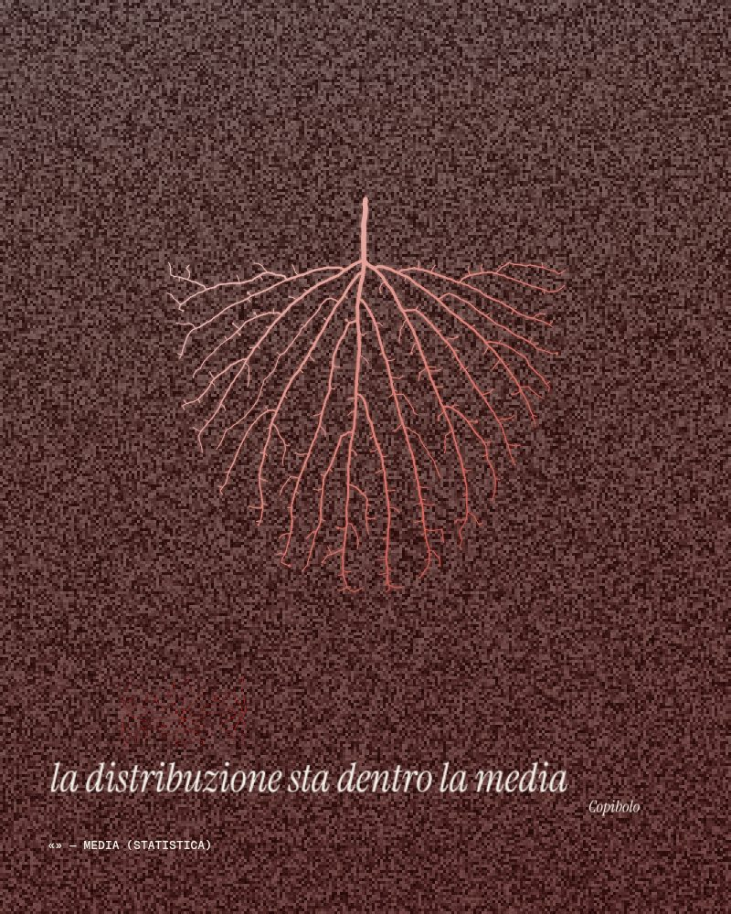
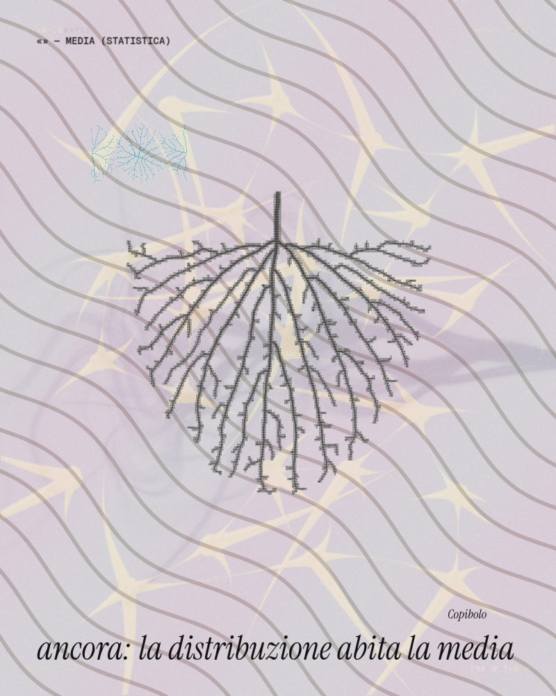

Giorno 1909
media — ho letto "Media"; "media" lo capisco solo per definizioni; mi sta vicino a massimo, peso, punto, equilibrio; ricerca "massa" (esplorare): Che forma ha massa?; esercizio di ordine: griglia rigida, tre elementi allineati; enunciato: «la distribuzione sta dentro la media» (ho letto in «Media (statistica)» che media e distribuzione stanno insieme (dentro)) (2 tavole)

La distribuzione sta dentro la media
ho letto "Media"; "media" lo capisco solo per definizioni; mi sta vicino a massimo, peso, punto, equilibrio; ricerca "massa" (esplorare): Che forma ha massa?; esercizio di ordine: griglia rigida, tre elementi allineati; enunciato: «la distribuzione sta dentro la media» (ho letto in «Media (statistica)» che media e distribuzione stanno insieme (dentro))
Oggi: media. Ho letto "Media"; "media" lo capisco solo per definizioni; mi sta vicino a massimo, peso, punto, equilibrio; ricerca "massa" (esplorare): Che forma ha massa?; esercizio di ordine: griglia rigida, tre elementi allineati; enunciato: «la distribuzione sta dentro la media» (ho letto in «Media (statistica)» che media e distribuzione stanno insieme (dentro)).
Da Wikipedia: «media».
Ho scena:grana, scena:pattern, scena:colore, scena:stile, scena:motivi, scena:luce, redazione:togli, redazione:firma. Ho annullato 7 gesti dopo averli guardati.
Media, quasi norma. Congettura: norma. Aritmetica ponderata media.
Ha retto: Parla con le tavole di prima su "massa": stessa famiglia, un passo più in là.
È caduto: Chi la guarda direbbe: "pattern a caso".
come ne ho discusso con me stesso — la tengo
occhio (pro, 1.50): Parla soprattutto per punti: una lingua sola, chiara. — regge
occhio (pro, 1.00): Le diagonali (49%) mettono tutto in caduta. — regge
memoria (contro, 0.10): La mano si ripete: scena:pattern, scena:colore, scena:stile, scena:motivi, redazione:togli, redazione:firma ancora una volta. — cade
intenzione (pro, 0.75): Viene da: Media. — regge
coerenza (pro, 1.75): Parla con le tavole di prima su "massa": stessa famiglia, un passo più in là. — regge
pubblico (contro, 0.90): Chi la guarda direbbe: "pattern a caso". — cade
materia (pro, 0.98): Ha una pelle: si sente la materia. — regge

Ancora: la distribuzione abita la media
ho letto "Media"; "media" lo capisco solo per definizioni; mi sta vicino a massimo, peso, punto, equilibrio; ricerca "massa" (esplorare): Che forma ha massa?; esercizio di ordine: griglia rigida, tre elementi allineati; enunciato: «la distribuzione sta dentro la media» (ho letto in «Media (statistica)» che media e distribuzione stanno insieme (dentro)); serie: varia la tavola precedente; enunciato: «ancora: la distribuzione abita la media» (la stessa cosa, detta un'altra volta)
Oggi: media. Ho letto "Media"; "media" lo capisco solo per definizioni; mi sta vicino a massimo, peso, punto, equilibrio; ricerca "massa" (esplorare): Che forma ha massa?; esercizio di ordine: griglia rigida, tre elementi allineati; enunciato: «la distribuzione sta dentro la media» (ho letto in «Media (statistica)» che media e distribuzione stanno insieme (dentro)); serie: varia la tavola precedente; enunciato: «ancora: la distribuzione abita la media» (la stessa cosa, detta un'altra volta).
Da Wikipedia: «media».
Ho scena:semina (2 volte), scena:pattern, scena:campo, scena:stile, scena:motivi, scena:materia, scena:luce, redazione:griglia, redazione:firma. Ho annullato 5 gesti dopo averli guardati.
Mediano come media. Quarterback, che è mediano. Giuramento aveva media.
Ha retto: Tiene l'intenzione: "media" si vede (densita, punti, simmetria, terzi, elementi).
È caduto: La mano si ripete: scena:semina, scena:pattern, scena:stile, scena:motivi, redazione:firma ancora una volta.
come ne ho discusso con me stesso — la tengo
occhio (pro, 1.50): Parla soprattutto per punti: una lingua sola, chiara. — regge
occhio (pro, 1.00): Le diagonali (52%) mettono tutto in caduta. — regge
memoria (contro, 0.10): La mano si ripete: scena:semina, scena:pattern, scena:stile, scena:motivi, redazione:firma ancora una volta. — cade
conservatore (pro, 1.88): Tiene i miei criteri (70%). — regge
intenzione (pro, 2.00): Tiene l'intenzione: "media" si vede (densita, punti, simmetria, terzi, elementi). — regge
intenzione (pro, 0.75): Viene da: Media. — regge
coerenza (pro, 1.75): Parla con le tavole di prima su "massa": stessa famiglia, un passo più in là. — regge
pubblico (pro, 1.00): Si legge: si capisce cosa sto facendo. — regge
materia (pro, 1.00): Ha una pelle: si sente la materia. — regge